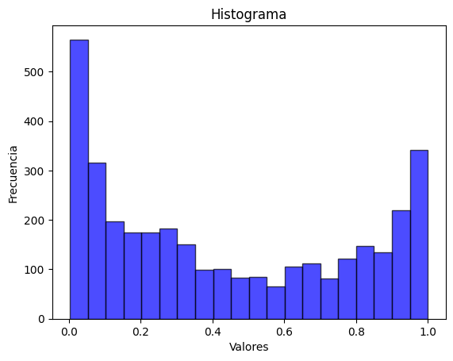

import pandas as pd
import pickle
import os
import requests
import geopandas as gpd
import boto3
import io
from datetime import datetime
import pytz
from io import BytesIO
import json
def load_pkl(ruta):
with open(ruta, 'rb') as archivo:
datos = pickle.load(archivo)
return datos
def leer_geojson(archivo_ruta):
try:
gdf = gpd.read_file(archivo_ruta)
return gdf
except Exception as e:
print(f"Error al leer el archivo .geojson: {e}")
return None
def guardar_geojson(geodf, filepath):
try:
# Guardar el GeoDataFrame como archivo .geojson
geodf.to_file(filepath, driver="GeoJSON")
print(f"Archivo guardado exitosamente en {filepath}")
except Exception as e:
print(f"Error al guardar el archivo: {e}")
Datos de estaciones en linea- Precipitaciones de lluvia acumulada#
# Diccionario global que almacenará la información recopilada
dicc_global = {
'Estaciones': {}
}
#Traemos id activas
ruta_estaciones='../Data/input/Estaciones-Activas.csv'
estaciones_activas = pd.read_csv(ruta_estaciones)
rango_ids = estaciones_activas['ID'].tolist()
# URL de la API para obtener datos históricos de estaciones meteorológicas en un rango de fechas
url = 'https://satic.cali.gov.co:9090/api/estaciones/historico_data/rango_fecha'
# Lista de variables de tiempo para las que se solicitarán datos
rango_variables = ['24h', '7d', '10d', '15d', '30d', '60d', '90d']
# Estructura del diccionario para almacenar la información
dicc_estructura = {
'id': [],
'24h': [],
'7d': [],
'10d': [],
'15d': [],
'30d': [],
'60d': [],
'90d': []
}
# Iterar sobre los IDs de estaciones
for rango_id in rango_ids:
# Iterar sobre los diferentes rangos de tiempo
for rango in rango_variables:
# Configurar el cuerpo de la solicitud a la API
body = {
"id": rango_id,
"rango": rango,
"rangoFechaDisct": False
}
# Realizar la solicitud POST a la API con el cuerpo especificado
resp = requests.post(url, json=body)
# Obtener la respuesta en formato JSON
info = resp.json()
# Inicializar la suma acumulada de los registros de precipitación
sum = 0
# Verificar si la respuesta contiene información y tiene al menos un elemento
if len(info) > 0:
# Obtener la lista de datos de precipitación (P) del primer elemento de la respuesta
p_list = info[0].get('P',[])
# Iterar sobre los registros de precipitación y acumular los valores
for registro in p_list:
sum = sum + float(registro.get('acumulado'))
# Agregar la suma acumulada al diccionario de estructura para el rango de tiempo actual
dicc_estructura[rango].append(sum)
# Agregar el nombre del sensor (nom_sensor) al diccionario de estructura
dicc_estructura['id'].append(rango_id)
#Convierte la estructura del diccionario a un dataframe
df = pd.DataFrame(dicc_estructura)
df.head()
| id | 24h | 7d | 10d | 15d | 30d | 60d | 90d | |
|---|---|---|---|---|---|---|---|---|
| 0 | 1 | 0.0 | 0.2 | 0.2 | 22.6 | 68.4 | 303.0 | 363.2 |
| 1 | 4 | 0.0 | 0.4 | 7.8 | 147.2 | 214.6 | 351.0 | 396.8 |
| 2 | 9 | 0.0 | 0.0 | 0.0 | 0.0 | 0.0 | 0.0 | 0.0 |
| 3 | 11 | 0.0 | 6.2 | 32.8 | 53.6 | 69.4 | 130.4 | 247.6 |
| 4 | 12 | 0.0 | 5.3 | 5.5 | 10.9 | 22.2 | 56.0 | 100.3 |
df.info()
<class 'pandas.core.frame.DataFrame'>
RangeIndex: 23 entries, 0 to 22
Data columns (total 8 columns):
# Column Non-Null Count Dtype
--- ------ -------------- -----
0 id 23 non-null int64
1 24h 23 non-null float64
2 7d 23 non-null float64
3 10d 23 non-null float64
4 15d 23 non-null float64
5 30d 23 non-null float64
6 60d 23 non-null float64
7 90d 23 non-null float64
dtypes: float64(7), int64(1)
memory usage: 1.6 KB
ruta_cuadricula_mapa='../Data/input/cuadricula_datos_completa.geojson'
cuadricula = leer_geojson(ruta_cuadricula_mapa)
cuadricula=cuadricula.rename(columns={'ID_SATIC': 'id',
'Categ_Ries': 'zonificacion',
'CAT': 'Nomenclatura_del_Suelo',
'Categ_CO_2': 'tipo_geologia'
})
# Realiza un fusion con los datos del dataframe y la cuadricula
cuadricula = cuadricula.merge(df, on='id', how='left')
df_nuevos_datos=cuadricula.copy()
df_nuevos_datos = df_nuevos_datos.fillna(0)
df_nuevos_datos.info()
<class 'geopandas.geodataframe.GeoDataFrame'>
Int64Index: 3454 entries, 0 to 3453
Data columns (total 22 columns):
# Column Non-Null Count Dtype
--- ------ -------------- -----
0 OBJECTID_1 3454 non-null int32
1 COD_COB25_ 3454 non-null object
2 NOM_COB25 3454 non-null object
3 SIM_COB25 3454 non-null object
4 GEOLOGIA_1 3454 non-null object
5 GEOLOGIA_2 3454 non-null object
6 ELEVACION 3454 non-null float64
7 PENDIENT 3454 non-null float64
8 Categ_1 3454 non-null object
9 zonificacion 3454 non-null int32
10 tipo_geologia 3454 non-null int32
11 Nomenclatura_del_Suelo 3454 non-null int32
12 NOMBRE_SIM 3454 non-null object
13 id 3454 non-null int32
14 geometry 3454 non-null geometry
15 24h 3454 non-null float64
16 7d 3454 non-null float64
17 10d 3454 non-null float64
18 15d 3454 non-null float64
19 30d 3454 non-null float64
20 60d 3454 non-null float64
21 90d 3454 non-null float64
dtypes: float64(9), geometry(1), int32(5), object(7)
memory usage: 553.2+ KB
columnas_resp=['NOM_COB25', 'GEOLOGIA_1','GEOLOGIA_2', 'ELEVACION', 'PENDIENT', 'Categ_1', 'zonificacion',
'tipo_geologia', 'Nomenclatura_del_Suelo', 'NOMBRE_SIM', 'id','24h', '7d', '10d','15d', '30d', '60d', '90d', 'geometry' ]
df_nuevos_datos=df_nuevos_datos[columnas_resp]
df_nuevos_datos.head(3)
| NOM_COB25 | GEOLOGIA_1 | GEOLOGIA_2 | ELEVACION | PENDIENT | Categ_1 | zonificacion | tipo_geologia | Nomenclatura_del_Suelo | NOMBRE_SIM | id | 24h | 7d | 10d | 15d | 30d | 60d | 90d | geometry | |
|---|---|---|---|---|---|---|---|---|---|---|---|---|---|---|---|---|---|---|---|
| 0 | Bosque mixto denso alto de tierra firme | Kv | Formacion Volcanica | 1984.197632 | 26.739103 | Amenaza media | 3 | 5 | 20 | LA_TERESITA | 23 | 0.0 | 0.3 | 3.6 | 48.7 | 289.8 | 445.0 | 523.0 | POLYGON ((-76.67031 3.45152, -76.67136 3.45152... |
| 1 | Bosque mixto denso alto de tierra firme | Kv | Formacion Volcanica | 2033.651123 | 6.319678 | Amenaza media | 3 | 5 | 20 | LA_TERESITA | 23 | 0.0 | 0.3 | 3.6 | 48.7 | 289.8 | 445.0 | 523.0 | POLYGON ((-76.67281 3.45402, -76.67281 3.45259... |
| 2 | Bosque mixto denso alto de tierra firme | Kv | Formacion Volcanica | 2095.797607 | 29.865055 | Amenaza media | 3 | 5 | 20 | LA_TERESITA | 23 | 0.0 | 0.3 | 3.6 | 48.7 | 289.8 | 445.0 | 523.0 | POLYGON ((-76.67281 3.45652, -76.67281 3.45402... |
columnas_modelo= ['ELEVACION','PENDIENT','zonificacion','Nomenclatura_del_Suelo','tipo_geologia','24h','7d','15d','30d','60d','90d']
import warnings
# Apagar los warnings
warnings.filterwarnings('ignore')
ruta_model_deploy='../Models/output/production-model.pkl'
modelo=load_pkl(ruta_model_deploy)
def predecir_probabilidades(df_nuevos_datos, modelo, columnas):
classifier=modelo["model"]
calibrator=modelo["calibrator"]
df_predict=df_nuevos_datos[columnas]
# Predecir probabilidades
y_pred_proba = classifier.predict_proba(df_predict)[:, 1]
# Calibrar porbabildiades
y_pred_calibrated = calibrator.predict(y_pred_proba)
# Predecir probabilidades
# Extraer las probabilidades para la clase positiva
df_nuevos_datos['Probabilidad'] = y_pred_calibrated
return df_nuevos_datos
probabilidades_nuevos_datos=predecir_probabilidades(df_nuevos_datos,modelo,columnas_modelo)
pd.options.display.max_columns = None
probabilidades_nuevos_datos.head(4)
| NOM_COB25 | GEOLOGIA_1 | GEOLOGIA_2 | ELEVACION | PENDIENT | Categ_1 | zonificacion | tipo_geologia | Nomenclatura_del_Suelo | NOMBRE_SIM | id | 24h | 7d | 10d | 15d | 30d | 60d | 90d | geometry | Probabilidad | |
|---|---|---|---|---|---|---|---|---|---|---|---|---|---|---|---|---|---|---|---|---|
| 0 | Bosque mixto denso alto de tierra firme | Kv | Formacion Volcanica | 1984.197632 | 26.739103 | Amenaza media | 3 | 5 | 20 | LA_TERESITA | 23 | 0.0 | 0.3 | 3.6 | 48.7 | 289.8 | 445.0 | 523.0 | POLYGON ((-76.67031 3.45152, -76.67136 3.45152... | 0.069844 |
| 1 | Bosque mixto denso alto de tierra firme | Kv | Formacion Volcanica | 2033.651123 | 6.319678 | Amenaza media | 3 | 5 | 20 | LA_TERESITA | 23 | 0.0 | 0.3 | 3.6 | 48.7 | 289.8 | 445.0 | 523.0 | POLYGON ((-76.67281 3.45402, -76.67281 3.45259... | 0.045477 |
| 2 | Bosque mixto denso alto de tierra firme | Kv | Formacion Volcanica | 2095.797607 | 29.865055 | Amenaza media | 3 | 5 | 20 | LA_TERESITA | 23 | 0.0 | 0.3 | 3.6 | 48.7 | 289.8 | 445.0 | 523.0 | POLYGON ((-76.67281 3.45652, -76.67281 3.45402... | 0.085116 |
| 3 | Bosque mixto denso alto de tierra firme | Kv | Formacion Volcanica | 2131.399902 | 67.399857 | Amenaza media | 3 | 5 | 20 | LA_TERESITA | 23 | 0.0 | 0.3 | 3.6 | 48.7 | 289.8 | 445.0 | 523.0 | POLYGON ((-76.67281 3.45902, -76.67281 3.45652... | 0.822138 |
probabilidades_nuevos_datos=probabilidades_nuevos_datos.rename(columns={'NOM_COB25': 'Cobertura_Suelo',
'GEOLOGIA_1': 'Abreviacion_Unidad_Geologica_Suelo',
'GEOLOGIA_2': 'Unidad_Geologica_Suelo',
'PENDIENT': 'PENDIENTE',
'Categ_1': 'Clasificacion_Riesgo',
'Categ_Ries': 'Categorizacion_riesgo',
'Categ_CO_2': 'Categorizacion_cobertura_suelo',
'NOMBRE_SIM': 'Nombre_Estacion',
'CAT': 'Categorizacion_geologia'})
probabilidades_nuevos_datos.head(2)
| Cobertura_Suelo | Abreviacion_Unidad_Geologica_Suelo | Unidad_Geologica_Suelo | ELEVACION | PENDIENTE | Clasificacion_Riesgo | zonificacion | tipo_geologia | Nomenclatura_del_Suelo | Nombre_Estacion | id | 24h | 7d | 10d | 15d | 30d | 60d | 90d | geometry | Probabilidad | |
|---|---|---|---|---|---|---|---|---|---|---|---|---|---|---|---|---|---|---|---|---|
| 0 | Bosque mixto denso alto de tierra firme | Kv | Formacion Volcanica | 1984.197632 | 26.739103 | Amenaza media | 3 | 5 | 20 | LA_TERESITA | 23 | 0.0 | 0.3 | 3.6 | 48.7 | 289.8 | 445.0 | 523.0 | POLYGON ((-76.67031 3.45152, -76.67136 3.45152... | 0.069844 |
| 1 | Bosque mixto denso alto de tierra firme | Kv | Formacion Volcanica | 2033.651123 | 6.319678 | Amenaza media | 3 | 5 | 20 | LA_TERESITA | 23 | 0.0 | 0.3 | 3.6 | 48.7 | 289.8 | 445.0 | 523.0 | POLYGON ((-76.67281 3.45402, -76.67281 3.45259... | 0.045477 |
# Distribucion de probabilidades:
import matplotlib.pyplot as plt
plt.hist(probabilidades_nuevos_datos['Probabilidad'], bins=20, color='blue', edgecolor='black', alpha=0.7)
plt.title("Histograma")
plt.xlabel("Valores")
plt.ylabel("Frecuencia")
plt.show()

ruta_new_data='../Data/output/new_Data_snap_shot.geojson'
ruta_infered_data='../Data/output/new_estimated_data.geojson'
guardar_geojson(df_nuevos_datos,ruta_new_data)
guardar_geojson(probabilidades_nuevos_datos,ruta_infered_data)
Archivo guardado exitosamente en ../Data/output/new_Data_snap_shot.geojson
Archivo guardado exitosamente en ../Data/output/new_estimated_data.geojson